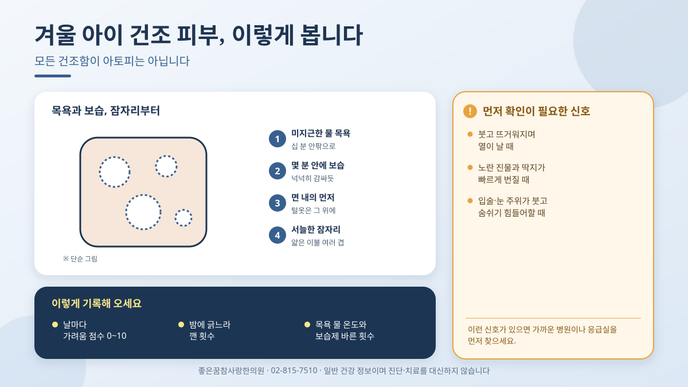

이종호 한의사 감수좋은꿈참사랑한의원 대표원장 (한의사 면허번호 19769)발행 2026-11-26 · 수정 2026-11-26
이 글의 차례
난방을 켜기 시작한 지 며칠 지난 저녁입니다. 아이 잠옷을 갈아입히다 보니 정강이와 팔 바깥쪽이 하얗게 일어나 있습니다. 손으로 쓸어 보면 까슬까슬하고, 아이는 이불 속에서 자꾸 다리를 비비며 긁습니다. '혹시 아토피가 생긴 건 아닐까.' 보호자의 마음이 덜컥 내려앉습니다.
겨울이 되면 진료실에 이런 걱정을 안고 오시는 보호자가 부쩍 늘어납니다. 여름에는 멀쩡하던 피부가 찬 바람과 함께 거칠어지고, 밤마다 긁느라 아이도 보호자도 잠을 설칩니다. 긁은 자리에 붉은 줄이 생기면 걱정은 더 커집니다.
먼저 안심하실 말씀을 드리면, 겨울에 아이 피부가 건조해지고 가려운 것은 아주 흔한 일입니다. 아이의 피부는 어른보다 얇고 수분을 붙잡아 두는 힘이 약해서, 차고 마른 공기에 더 빨리 반응합니다. 모든 건조함이 아토피 피부염은 아닙니다.
그래서 저는 피부를 보기 전에 언제부터, 어디가, 어떻게 달라졌는지를 먼저 여쭙니다. 계절과 함께 왔다 가는지, 일 년 내내 이어지는지에 따라 살펴볼 방향이 달라지기 때문입니다.
겨울 건조 피부는 어떤 모습인가요?
겨울 건조 피부는 대개 정강이, 팔 바깥쪽, 허벅지, 등처럼 넓고 기름샘이 적은 자리에서 먼저 시작됩니다. 피부가 하얗게 일어나고, 손으로 쓸면 까슬까슬하며, 심하면 논바닥처럼 잔금이 갈라져 보이기도 합니다.
가려움은 옷을 벗을 때, 목욕하고 나온 직후, 따뜻한 이불 속에 들어갔을 때 심해지는 경우가 많습니다. 피부 온도가 오르거나 수분이 갑자기 날아갈 때 가려움이 올라오기 때문입니다. 아이가 잠들기 전 다리를 비비며 긁는 모습이 흔합니다.
볼과 입 주변이 트고 붉어지는 것도 겨울에 자주 봅니다. 찬 바람을 맞고 들어와 침을 자주 핥거나 콧물을 닦는 자리가 쉽게 거칠어집니다. 입술 주변이 빨갛게 트는 것은 아이가 자꾸 입술을 핥는 습관과 함께 오는 경우가 많습니다.
손등과 손가락 마디가 갈라지는 아이도 있습니다. 겨울에는 손 씻는 횟수가 늘고 찬 바람에 손이 그대로 드러나기 쉬워서, 손등이 붉게 트고 따갑다고 하기도 합니다.
왜 겨울만 되면 아이 피부가 마를까요
피부 맨 바깥에는 벽돌과 시멘트처럼 피부 세포와 기름 성분이 촘촘히 쌓여 수분이 날아가지 않게 막아 주는 장벽이 있습니다. 겨울에는 여러 이유로 이 장벽이 쉽게 흔들립니다.
- 바깥 공기가 차고 마른 데다 난방으로 실내 습도까지 낮아지는 경우
- 추워서 뜨거운 물로 오래 목욕하는 경우
- 세정력이 강한 비누나 거품 목욕제를 자주 쓰는 경우
- 두꺼운 겨울옷과 털 소재가 피부에 닿아 마찰이 늘어나는 경우
- 추워서 물을 덜 마시고 땀을 덜 흘리는 경우
- 바닥 난방 위에서 이불을 두껍게 덮고 자 몸이 덥게 지내는 경우
아이의 피부는 어른보다 얇고 장벽이 아직 자라는 중이라 이런 변화에 더 빨리 반응합니다. 같은 집에 사는 어른은 괜찮은데 아이만 피부가 하얗게 일어나는 것도 그래서입니다.
한의학에서는 겨울의 마르고 찬 기운이 피부의 진액을 말린다고 설명하곤 합니다. 평소 몸에 열이 많아 덥게 자고 땀을 많이 흘리는 아이, 입이 짧고 기운이 약한 아이는 같은 건조함이어도 살펴볼 부분이 조금씩 다릅니다.
아토피 피부염과는 어떻게 다른가요?
보호자께서 가장 궁금해하시는 부분입니다. 겨울 건조 피부와 아토피 피부염은 겉으로 비슷해 보일 때가 있지만, 몇 가지 다른 점이 있습니다.
겨울 건조 피부는 계절과 함께 왔다가 날이 풀리면 대개 가라앉습니다. 하얗게 일어나는 것이 주된 모습이고, 보습을 꾸준히 하면 눈에 띄게 달라집니다. 가려움도 있지만 잠을 크게 깨울 정도로 심하지 않은 경우가 많습니다.
아토피 피부염은 계절과 상관없이 좋아졌다 나빠졌다를 되풀이하는 경우가 많습니다. 팔꿈치 안쪽, 무릎 뒤, 목처럼 접히는 자리에 붉은 습진이 생기고, 긁은 자리가 두꺼워지거나 진물이 나기도 합니다. 가려움이 심해 밤에 자주 깨고, 가족 가운데 아토피나 비염, 천식이 있는 경우도 많습니다.
다만 이 구분은 처음부터 칼로 자르듯 되지 않습니다. 건조 피부가 심해지면 습진처럼 붉어지기도 하고, 아토피 피부염이 있는 아이는 겨울에 더 심해지기도 합니다. 붉은 습진이 접히는 자리에 자꾸 생긴다면 소아청소년과나 피부과에서 확인을 받아 보시길 권합니다.
긁는 습관과 가려움의 고리
가려워서 긁으면 잠깐 시원하지만, 긁는 동안 피부 장벽이 더 상해 더 가려워집니다. 그러면 다시 긁게 되고, 이 고리가 이어지면 처음보다 피부가 훨씬 거칠어집니다. 겨울 건조 피부가 생각보다 오래가는 것도 이 고리 때문인 경우가 많습니다.
아이에게 긁지 말라고만 하기는 어렵습니다. 대신 손톱을 짧고 둥글게 다듬어 두시고, 가려운 자리를 손바닥으로 가볍게 눌러 주거나 시원한 수건을 잠깐 대 주는 방법을 알려 주세요. 보습제를 바르는 손길로 쓰다듬어 주는 것도 도움이 됩니다.
밤에 긁는 아이라면 잠자리 온도를 먼저 살펴보세요. 방이 덥고 이불이 두꺼우면 피부 온도가 올라 가려움이 심해집니다. 조금 서늘하다 싶은 온도에 얇은 이불 여러 겹이 긁는 횟수를 줄이는 데 도움이 될 수 있습니다.
긁는 것은 지루하거나 긴장될 때 더 늘어나기도 합니다. 텔레비전을 보거나 숙제를 할 때 무심코 긁는 아이라면, 손을 쓰는 놀이나 말랑한 공을 쥐는 것처럼 손을 바쁘게 하는 방법이 도움이 됩니다. 긁는 모습을 보고 나무라기보다 다른 행동으로 슬쩍 이끌어 주시는 편이 아이에게도 편합니다.
겨울 피부에 좋은 옷과 잠자리
피부에 바로 닿는 옷은 부드러운 면 소재가 무난합니다. 털옷이나 합성섬유는 따뜻하지만 피부를 문질러 가려움을 키울 수 있어서, 면 내의 위에 겹쳐 입히시는 편이 좋습니다. 새 옷은 한 번 빨아 입히시고, 세제는 잘 헹궈 남지 않게 해 주세요.
바깥에서 놀고 들어오면 땀이 식으면서 피부가 더 마르기 쉽습니다. 땀이 많이 난 날에는 미지근한 물로 가볍게 씻기고 보습제를 발라 주세요. 실내에 들어오면 두꺼운 겉옷을 바로 벗겨 몸이 지나치게 덥지 않게 해 주시는 것도 도움이 됩니다.
잠옷은 몸에 너무 붙지 않고 땀을 잘 흡수하는 것이 좋습니다. 이불 속이 덥고 답답하면 아이가 자면서 더 긁게 되니, 방 온도와 이불 두께를 함께 조절해 보세요.
바깥 놀이와 찬 바람
겨울이라고 바깥 놀이를 줄일 필요는 없습니다. 다만 찬 바람을 오래 맞으면 볼과 손등, 입 주변이 쉽게 트므로 나가기 전에 보습제를 한 번 더 발라 주세요. 장갑과 목도리로 찬 바람이 직접 닿는 자리를 가려 주시면 좋습니다.
들어와서 손을 씻은 뒤에는 손등에도 보습제를 발라 주세요. 겨울에는 손 씻는 횟수가 늘면서 손등이 갈라지는 아이가 많습니다. 손을 씻을 때 뜨거운 물보다 미지근한 물을 쓰는 것만으로도 차이가 납니다.
먼저 이렇게 여쭙니다
처음 오시면 저는 대략 이런 순서로 여쭙니다. 미리 생각해 오시면 이야기가 훨씬 수월해집니다.
- 건조함과 가려움은 언제부터 시작했고, 해마다 겨울에 되풀이되나요?
- 주로 어느 자리가 마르고, 접히는 자리에도 붉은 곳이 있나요?
- 밤에 긁느라 깨는 일이 있나요? 일주일에 몇 번 정도인가요?
- 목욕은 얼마나 자주, 몇 분 정도, 어떤 물 온도로 하나요?
- 보습제는 무엇을 언제 바르고, 바른 뒤 따갑다고 하지는 않나요?
- 가족 가운데 아토피, 비염, 천식이 있는 분이 있나요?
모든 질문에 정확히 답하지 못하셔도 괜찮습니다. 가장 심할 때의 피부 사진과 쓰고 있는 보습제만 가져오셔도 이야기의 절반은 시작된 셈입니다.
집 안 환경도 함께 여쭙니다. 난방은 어떻게 하는지, 습도계가 있다면 몇 퍼센트 정도인지, 아이가 주로 어떤 소재의 옷을 입는지 같은 이야기가 피부를 이해하는 데 큰 도움이 됩니다.
일상에서 먼저 해 볼 수 있는 것
겨울 건조 피부는 생활에서 할 수 있는 것이 많습니다. 하나를 골라 두세 주 꾸준히 이어 가 보세요.
- 목욕은 미지근한 물로 십 분 안팎, 비누는 겨드랑이·사타구니처럼 필요한 곳에만
- 목욕 뒤 물기를 가볍게 두드려 닦고, 몇 분 안에 보습제를 넉넉히 바르기
- 하루 두 번, 아침과 잠들기 전에 보습제 바르기
- 실내 습도를 너무 낮지 않게 맞추고, 가습기는 날마다 깨끗이 씻기
- 피부에 닿는 옷은 부드러운 면으로, 털옷은 그 위에 겹쳐 입히기
- 잠자리는 조금 서늘하게, 두꺼운 이불 하나보다 얇은 이불 여러 겹으로
보습제는 얇게 여러 번보다 넉넉하게 바르는 것이 좋습니다. 피부결을 따라 부드럽게 펴 바르고, 문지르기보다 손바닥으로 감싸듯 발라 주세요. 바른 뒤 아이가 따갑다고 하면 향이나 첨가물이 적은 제품으로 바꿔 보시는 것이 좋습니다.
바닥 난방을 세게 하는 집이라면 아이가 바닥에 등을 대고 오래 자지 않도록 요를 한 겹 더 깔아 주세요. 바닥에서 올라오는 열과 마른 공기가 등과 종아리를 쉽게 마르게 합니다.
물도 조금씩 자주 마시게 해 주세요. 겨울에는 목이 덜 말라 물을 덜 찾지만, 몸 안의 수분이 모자라면 피부도 함께 마르기 쉽습니다. 따뜻한 보리차를 곁에 두고 오가며 한 모금씩 마시게 하는 것도 방법입니다.
먹는 것도 피부와 이어져 있습니다. 생선, 달걀, 콩, 견과류처럼 좋은 기름과 단백질이 든 음식을 골고루 먹고, 단 간식과 과자를 조금 줄이면 피부가 버티는 바탕이 됩니다.
한의원에서 함께 살필 수 있는 경우
- 보습을 꾸준히 하는데도 겨울마다 건조함과 가려움이 오래 이어지는 경우
- 몸에 열이 많아 덥게 자고 땀을 흘린 뒤 더 가려워하는 경우
- 입이 짧고 쉽게 지치며 피부가 늘 푸석한 경우
- 가려움 때문에 잠이 얕아지고 낮에 짜증이 늘어난 경우
- 겨울마다 감기를 자주 앓으면서 피부도 함께 거칠어지는 경우
좋은꿈참사랑한의원에 오시면 먼저 아래 '먼저 확인이 필요한' 신호가 없는지부터 봅니다. 그다음 아이의 맥을 짚고 피부를 직접 보며, 혀와 얼굴빛, 잠과 입맛, 대소변, 땀을 여쭙습니다. 아이가 낯설어하면 보호자 품에 안긴 채로 천천히 진찰합니다.
진찰한 내용을 바탕으로 목욕과 보습, 잠자리처럼 생활에서 바꿔 볼 것 하나와 함께 한약 상담 등 지금 상태에 맞는 것을 정합니다. 한약을 상의할 때는 아이가 쓰고 있는 약을 모두 확인하고, 아이의 체격과 상태에 맞춰 신중하게 정합니다. 병원에서 처방받은 바르는 약이나 먹는 약은 상의 없이 멈추지 않습니다.
한의원 진료는 소아청소년과나 피부과 진료를 대신하는 것이 아니라 나란히 가는 것입니다. 병원에서 피부 상태를 확인하고 필요한 약을 쓰고, 한의원에서는 아이의 잠과 땀, 몸의 열과 생활 리듬을 함께 살핀다고 생각해 주시면 됩니다.
이렇게 기록해 오시면 상담이 쉬워집니다
피부는 날씨와 생활에 따라 날마다 달라서 기록이 큰 도움이 됩니다. 두 주 정도만 간단히 적어 보세요.
- 날마다 가려움 정도를 0에서 10까지
- 밤에 긁느라 깬 횟수
- 목욕한 날과 물 온도, 시간
- 보습제를 바른 횟수와 바른 제품
- 실내 습도와 난방 온도, 바깥 놀이를 한 날
빠진 날이 있어도 괜찮습니다. 기록을 나란히 놓고 보면 가려움이 어떤 날, 어떤 상황에 심해지는지 보이기 시작하고, 그것이 다음 걸음을 정하는 실마리가 됩니다.
겨울을 조금 더 편하게 나는 일
겨울마다 아이가 긁는 모습을 보는 것은 보호자에게 마음 아픈 일입니다. 하지만 겨울 건조 피부는 생활을 조금씩 바꾸면 눈에 띄게 달라지는 경우가 많습니다. 목욕 물 온도, 보습 시간, 잠자리 온도 같은 작은 것들이 아이의 밤을 바꿉니다.
이번 주에는 목욕 뒤 몇 분 안에 보습제를 바르는 것부터 해 보세요. 다음에 오시면 그 기록부터 함께 펼쳐 보겠습니다.
이런 증상은 먼저 확인이 필요합니다
- 피부가 붉게 부어오르고 뜨거워지며 열이 나거나 노란 진물과 딱지가 빠르게 번지는 경우
- 입술이나 눈 주위가 갑자기 붓고 숨쉬기 힘들어하거나 온몸에 두드러기가 번지는 경우
이런 신호가 있으면 한의원보다 가까운 병원이나 응급실을 먼저 찾으세요.
함께 읽으면 좋은 글
- 아이 피부가 건조하고 밤마다 긁어서 깨는 소아 아토피 피부염은 어떻게 살피나요?
- 겨울이면 정강이가 하얗게 일어나고 밤에 가려울 때는 어떻게 살피나요?
- 보일러를 세게 틀고 자면 등과 종아리가 가려운 것은 어떻게 살피나요?
- 가려움이 낮에 심한지 밤에 심한지는 왜 묻고, 어떻게 적어 두나요?
- 몸이 가렵고 피부가 건조한 아토피 피부염은 생활에서 무엇을 살피나요?

여쭙는 것
- 건조함과 가려움은 언제부터 시작했고, 해마다 겨울에 되풀이되나요?
- 주로 어느 자리가 마르고, 접히는 자리에도 붉은 곳이 있나요?
- 밤에 긁느라 깨는 일이 있나요? 일주일에 몇 번 정도인가요?
생활에서 해 볼 것
- 목욕은 미지근한 물로 십 분 안팎, 비누는 겨드랑이·사타구니처럼 필요한 곳에만
- 목욕 뒤 물기를 가볍게 두드려 닦고, 몇 분 안에 보습제를 넉넉히 바르기
- 하루 두 번, 아침과 잠들기 전에 보습제 바르기
한의원에서 함께 살필 것
- 보습을 꾸준히 하는데도 겨울마다 건조함과 가려움이 오래 이어지는 경우
- 몸에 열이 많아 덥게 자고 땀을 흘린 뒤 더 가려워하는 경우
- 입이 짧고 쉽게 지치며 피부가 늘 푸석한 경우
먼저 확인이 필요한 신호
- 피부가 붉게 부어오르고 뜨거워지며 열이 나거나 노란 진물과 딱지가 빠르게 번지는 경우
- 입술이나 눈 주위가 갑자기 붓고 숨쉬기 힘들어하거나 온몸에 두드러기가 번지는 경우
한눈에 보는 표
| 구분 | 핵심 |
|---|---|
| 여쭙는 것 | 건조함과 가려움은 언제부터 시작했고, 해마다 겨울에 되풀이되나요? 주로 어느 자리가 마르고, 접히는 자리에도 붉은 곳이 있나요? |
| 생활에서 해 볼 것 | 목욕은 미지근한 물로 십 분 안팎, 비누는 겨드랑이·사타구니처럼 필요한 곳에만 목욕 뒤 물기를 가볍게 두드려 닦고, 몇 분 안에 보습제를 넉넉히 바르기 |
| 한의원에서 함께 살필 것 | 보습을 꾸준히 하는데도 겨울마다 건조함과 가려움이 오래 이어지는 경우 몸에 열이 많아 덥게 자고 땀을 흘린 뒤 더 가려워하는 경우 |
| 먼저 확인이 필요한 신호 | 피부가 붉게 부어오르고 뜨거워지며 열이 나거나 노란 진물과 딱지가 빠르게 번지는 경우 입술이나 눈 주위가 갑자기 붓고 숨쉬기 힘들어하거나 온몸에 두드러기가 번지는 경우 |
자주 묻는 질문
겨울에만 건조하고 가려우면 아토피가 아닌가요?
계절과 함께 왔다 가고 보습으로 눈에 띄게 달라진다면 겨울 건조 피부일 가능성이 큽니다. 다만 접히는 자리에 붉은 습진이 자꾸 생기거나 밤잠을 자주 깨운다면 소아청소년과나 피부과에서 확인을 받아 보세요.
목욕은 매일 시켜도 되나요?
미지근한 물로 십 분 안팎, 비누를 필요한 곳에만 쓴다면 매일 씻겨도 괜찮습니다. 목욕 뒤 몇 분 안에 보습제를 넉넉히 바르는 것이 더 중요합니다.
보습제는 어떤 것을 골라야 하나요?
향이나 첨가물이 적고, 발랐을 때 아이가 따갑다고 하지 않는 제품이 무난합니다. 건조함이 심한 겨울에는 묽은 로션보다 조금 되직한 크림이 오래 머무는 편입니다.
병원에서 받은 바르는 약을 쓰는데 한약을 함께 먹어도 되나요?
아이가 쓰고 있는 약을 모두 확인하고 신중하게 정합니다. 바르는 약은 처방받은 대로 이어 가시고, 약 이름을 알려 주시면 함께 살펴보겠습니다.
가습기를 틀면 도움이 되나요?
실내가 많이 건조하다면 도움이 될 수 있습니다. 다만 물통을 날마다 깨끗이 씻고, 너무 습해지지 않게 습도계를 함께 보시는 것이 좋습니다.
좋은꿈참사랑한의원은 재진 때 지난번 이야기부터 이어서 여쭙니다. 진료시간과 예약은 오시는 길에서 확인하세요.
어디서 상담받을 수 있나요?
좋은꿈참사랑한의원은 서울 동작구 만양로2길 2 신성빌딩 3층·5층(서울 동작구 상도동, 7호선 상도역 3번 출구 근처)에 있습니다. 한의사 3명(이종호 대표원장, 조영기 수석진료원장, 정원영 진료원장)이 진료합니다. 진료시간은 평일 09:30~20:00(점심 13:00~14:00), 토·일·공휴일 09:30~15:00이며, 방문 전 전화로 확인을 권합니다. 예약은 네이버 예약, 카카오톡 상담, 전화 02-815-7510로 받습니다.
이 글은 일반적인 건강 정보이며 개인의 진단이나 치료를 대신하지 않습니다. 증상이 있거나 복용 중인 약이 있다면 진료를 통해 확인하세요. 치료 효과는 개인마다 다를 수 있습니다.
작성 기준: 일반적으로 알려져 있는 건강 정보를 참고해 정리했습니다(대표원장 감수). 증상 기록은 1~2주 동안 하루 1회, 비슷한 시간에 적어 오시면 지난 상태와 비교하기 쉽습니다.